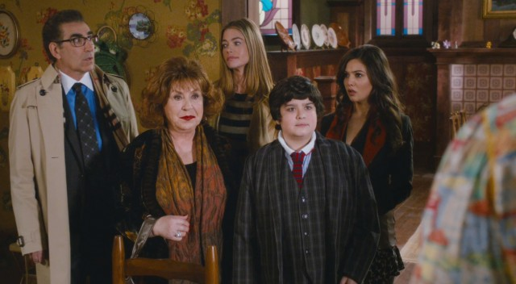

MADEA'S WITNESS PROTECTION
MAIN ACTORS: Tyler Perry-Madea ; Eugene Levy. George Needleman ; Denise Richards. Kate Needleman ; Tom Arnold. Walter ; Doris Roberts. Barbara .
SYNOPSIS:For years, mild-mannered Wall Street banker George Needleman (Eugene Levy) has meandered through life oblivious to his family's dysfunction and his company's malfeasance, but he's forced to wake up when he learns that he's been framed in a mob-backed Ponzi scheme. Placed under federal protection, George and his family are shipped down South to Madea's (Tyler Perry) house, where the no-nonsense matriarch whips them all into shape using her special brand of tough love.
AGE RESTICTION: 16 years and older.
SHOWING TIMES:
- 10h30 - 12h30
- 14h00 - 16h00
- 18h00 - 20h00